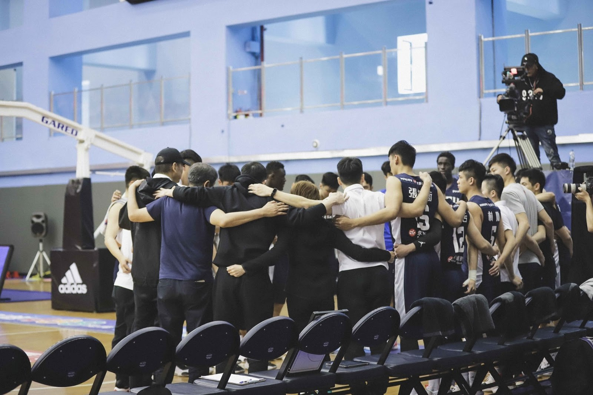

逆風高飛：政大雄鷹和UBA的困境與未來
2020-06-02 陳庭寬、張華真、張騰中
#UBA
#政大
#雄鷹
【記者陳庭寬、張華真、張騰中台北報導】沙拉、茶飲、氣泡飲……，可別以為這只是間緊鄰台北市政治大學校門口的尋常輕食餐廳，也別看眼前運動鞋盒造型的收銀台，以及店內販售的T-shirt、加油棒等運動周邊商品，就認為這只是間紀念品店。
其實這間2019年底正式開張的「政大62運動文創工作室」（NCCU Griffins Studio 62），是由政大校男籃雄鷹聯手運動品牌Jorden打造，更是全台首間由大學籃球隊打造的複合型品牌形象店。其最大的特色就是擁有多重用途的寬廣空間，除了平日作為用餐區外，於店內舉辦體能訓練課程、球隊行銷等活動時，也可作為場地使用。
政大雄鷹開設於政大正門旁的複合式品牌形象店 NCCU Griffins Studio 62。 圖／張騰中攝
政大雄鷹的獨特
「我們是一家正在創造歷史的店，我們在創造政大的歷史。」店長Francis Sherwin自豪地說，在目前台灣各大學裡，找不到第二家和政大一樣以校隊品牌理念經營的商店。
但擁有這家店，並不是讓政大雄鷹打開知名度的主要因素。
三年前，在政大校友姜豐年支持下，政大雄鷹籃球隊正式成軍。成立當時，政大雄鷹就以一支半專業學生運動員和半一般大學生組成的球隊，在國內的UBA（大專籃球聯賽）公開二級男子籃球組取得第三名，並順利依據賽制排名晉級至公開一級，更於107學年度闖入競爭激烈的八強，刷新政大籃球史最佳紀錄，因此一戰成名。
相較於台灣其他大學校隊，雄鷹團隊十分注重品牌包裝，而他們的理念發想及風格設計，則是參考了美國大學籃球錦標賽（NCAA）球隊，包括紅、藍兩大代表色的確立、吉祥物的選定和球隊氣氛的營造。
雄鷹品牌行銷總監孫秉宏說：「我們會觀察NCAA中正流行的事物，當作是路線參考。也希望用不同的形式，以行銷作為手段，將NCCU（政大英文縮寫）作為一個品牌推廣出去。」Studio62，則作為宣傳球隊和接觸民眾的窗口。
NCCU Griffins Studio 62時常舉辦拳擊課程等室內活動，吸引在地居民及同學參與。 圖／NCCU Griffins studio 62提供
雄鷹與UBA的困境
新成軍的政大雄鷹，替大專籃球聯賽增添新亮點，且隨著戰績的進步與品牌的經營，近年在籃壇已站穩腳跟，成為了不可忽視的新勢力，但回到政大校園，不管是一般學生或教職員，似乎對於雄鷹的認識還是相當有限。
「同學平常很少討論到雄鷹，只知道他們好像很積極在宣傳。」政治大學法律學系二年級的學生陳奕帆說。
政大斯拉夫語系行政專員伊凡尤命也認為，目前主要關注雄鷹的同學或教職員，大部分是本來就有運動習慣的人，其他人並不會因為雄鷹是校隊而特別去支持，他們所做的宣傳效果有限，「一開始會好奇他們為什麼會成立，但也就只於這樣了，不會想進一步去挖掘更多。」
其實政大雄鷹面臨的品牌行銷困境，和大專籃球的大環境發展現況有關。
這種無法凝聚球迷的現象其實不只發生在政大，雖然近年UBA賽會本身於品牌推廣上也相當積極，觀賽人數逐年提升，但仍與目前台灣最受球迷歡迎的聯賽HBL（高中甲級籃球聯賽）有一大段距離。
以兩者均最為熱門的男子組冠軍賽為例，108學年HBL觀賽人次達百萬人，UBA卻僅約40萬人觀看，差距不小。對於這樣的落差，就讀於政大英國語文學系二年級的學生李書瑋說，「確實，以前高中時本來有在看HBL，但大學就不會想再繼續關注了。」
球迷於HBL決賽期間擠滿小巨蛋。 圖／陳庭寬攝
UBA作為HBL高中籃球明星畢業後繼續活躍的舞台，卻無法將球迷熱度繼續維持，對此現象，資深球評李亦伸指出，「如果不在自家的體育館比賽的話，學生可能比較沒興趣支持。」他認為關鍵在於大學與高中風氣的不同，大學不像高中般封閉，一般學生與球員平常較無接觸，無法培養革命情感，自然較無意願到場支持。
除此之外，同樣也是資深球評的賈凡則說：「很大的原因在於不確定性，高中的比賽懸念多出許多。」相較於HBL各階段賽事分組龍頭時常更迭，UBA近年因大學資源集中的問題，聯賽多只被少數傳統強權統治，循環賽出現15勝0負或2勝13負等差距懸殊的戰積已是司空見慣，比賽還未開打，結果卻呼之欲出，失去了競技體育最吸引人的魅力，球迷理所當然較少。
走出困境的關鍵
由於高中與大學的不同，UBA或許難以如HBL般依靠校園自有的凝聚力帶動風氣，整體聯賽的不確定性更是難以人為操控，但也並非沒有其他出路。
「UBA未來的出路在主客場制！」李亦伸與賈凡異口同聲地說，他們都建議，比起一味複製HBL的經驗，UBA不妨可以重新檢視自身條件，另闢蹊徑。
台灣的各大聯賽近年為凝聚在地球迷、營造主場敵我意識，皆有嘗試將比賽發展為主客場制的提案，卻均受制於管理場地的巨額費用，而以失敗告終。
相形之下，UBA卻因為每個大學皆有各自的體育場館而無此問題。「這本來就應該是UBA發展最大的本錢，」李亦伸補充說，若是能成功經營主客場制，學生為維持學校主場顏面，進場加油意願一定會大幅提升，球員也能成為同學們的英雄，在此氣氛下受益，目前卻因為與轉播商相關的合約及法規，短期之內仍無法改善，相當可惜。

於賽前圍圈一同打氣，試圖為校爭光的政大雄鷹。 圖／取自政大雄鷹籃球隊粉專
關於聯賽競爭性不足的問題，賈凡認為關鍵藏在球員的登錄名單中。
HBL每年聯賽各校只能登錄12名球員，造成球員為了得到更多發展空間，會分散選擇不同的學校就讀，使得聯賽各隊實力差距不大，比賽刺激難料。但UBA於每年各校的登錄名額則為18名，多出了6個空缺，使得於名單末端的球員，就算於強隊暫時無法爭取到上場時間，仍願意留下等待機會，也間接導致後段學校缺乏兵源，更難以與前段學校競爭。若是能比照HBL改善制度，縮短登錄名單促使球員流動至後端學校，聯賽的競爭性將有望提升。
在張光源眼中，政大並非不支持雄鷹發展，而是校方較無積極的具體措施，除了財務及硬體上的援助，若是能多主動創造機會吸引同學參與，勢必能起到良好效果。以HBL長期的招牌台北市立松山高中為例，不論是學生或校友皆相當支持球隊發展。對此，松山高中學務主任張光源說，「除了球員和教練，學校行政的支持也很重要。」
他認為，校方積極帶頭推動，更能有效鼓勵師生參與。舉例來說，校方近年不管是邀請學生社團演出中場表演，或委託家長會帶領球場加油團，皆使師生對賽事的關注提高，對大學各球隊均有參考價值。
松山高中競技啦啦社於HBL比賽中場時間演出，替球員打氣。 圖／松山高中競技啦啦社提供
回歸校園：球員與一般生的互動
「大學和高中本質上就不同，」李亦伸觀察，大學相較於高中學習環境較為開放，不可能透過行政端去推廣或鼓勵師生支持校隊，只能以比賽精彩度或行銷宣傳吸引更多觀眾。
品牌行銷方面，賈凡認為雄鷹在目前UBA的球隊裡已經做得很完善，但連結校隊與師生不單只是品牌塑造，還有球員本身的形象管理，這會直接影響師生對球隊的看法，也是選擇是否支持球隊的關鍵。
只不過，由於政大雄鷹籃球隊剛成立時，有部分球員是以優異體育成績入學，而不像大部分學生以學業成績入學，這讓他們進入校園時備受討論，就有學生質疑球員的成績，甚至反對他們入學，更別說會主動支持球隊。
「他們說雄鷹不倒，政大不會好！」目前就讀政大廣告系大三的雄鷹球員王詠誠直言，由於籃球隊的成立會壓縮其他校隊資源，像是健身房的使用和經費的分配，再加上球員在賽季的練習強度加強，有時候會壓縮到課業的學習時間，進而影響到團隊分組作業的進度，「他們會覺得我們雄鷹蠻雷的，或是這些體保生都來鬧的。」
但另一方面，隨著球員們進入課堂，他們的努力漸漸被同學們看到，政大校內對雄鷹的看法從反對轉向支持。107學年度首度以政大為主場的預賽，當時吸引超過4500名觀眾入場。
政大雄鷹大三球員王詠誠（右一）與球迷互動，一同合影。 圖／張騰中攝
大學球壇，接下來？
綜觀台灣大學球壇，雖然UBA聯賽的關注度尚且無法與HBL比擬，各大學內球員與一般學生之間仍有距離，還無法有效凝聚校園並吸引更多球迷，但以政大雄鷹為例，改變已經悄悄發生。
雄鷹想飛，除了積極品牌行銷、制度改變，與球員們自身的努力，都是轉變的助力。
其實球員一直都不只是球員，也可能是學生時期坐在你身旁，跟你一樣擁有無限夢想的同學。大學球壇要更進一步發展，更關鍵的或許是需要你我放下刻板印象，不帶偏見去了解與發現。
廢人廢話

陳庭寬
不考試時有作業，沒作業時要考試，法律新聞雙主修，健康人際水裡丟，勸君用心做新聞，否則國考沒下文。
廢廢相報
記者｜吳冠伶 徐嘉璟 陳庭寬
指導｜李法賢
copyright©2020 廢報